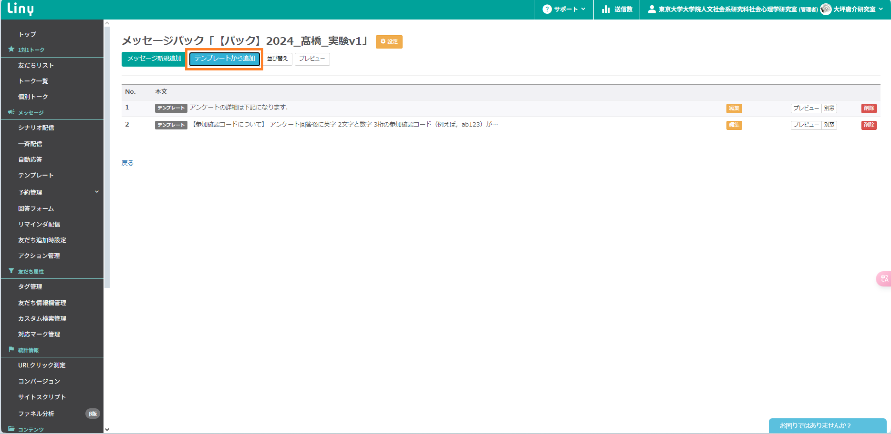

アンケートの配信手順
1. 「参加確認コード入力」の回答フォームを作成
- 回答フォーム＞テンプレート＞操作＞コピー
- フォーム名 (管理用) を変更
- ここでは，「ドキュメント用ファイル名」に変更
- フォルダを「参加確認コード入力」に変更

2. アンケート用のテンプレートを作る
2.1. フォルダの作成
- テンプレート＞新しいフォルダ＞
- フォルダ名（e.g., 2024_髙橋_実験v1 ）を入力し，「決定」をクリック
- フォルダ名は，「年度_名前_(内容が識別できる名称)」にする
-
例:2024_髙橋_CJ (調査実習の場合)，2024_髙橋_netexp
(ネットワーク実験の場合)

- 下記のような画面になれば成功

2.2. カルーセルの作成
参考：カルーセルとは
-
質問紙テンプレート＞「【カルーセル】アンケート用テンプレート」の「操作」＞「コピー」

-
テンプレート名の変更（ここでは，「【カルーセル】2024_髙橋_実験v1」に変更）
- フォルダの変更（ここでは，「Doc用」に変更）

- 「アンケートに回答する」のURLを変更
-
「参加確認コードを入力する」で開く回答フォームを，先ほど作成した回答フォームに変更
- ここでは，「ドキュメント用の参加確認コード入力フォーム」に変更

- 「テンプレート登録」をクリック

2.3. アンケート説明の作成
-
質問紙テンプレート＞「【アンケート説明】アンケート用テンプレート」の「操作」＞「コピー」

-
テンプレート名の変更（ここでは，「【アンケート説明】2024_髙橋_実験v1」に変更）
- フォルダの変更（ここでは，「Doc用」に変更）
- アンケート説明の本文を変更
- ここでは，「アンケートの説明です」に変更

- 「テンプレート登録」をクリック

2.4. カルーセルを押したときに配信するパックの作成
-
質問紙テンプレート＞「【パック】アンケート用テンプレート」の「操作」＞「コピー」

-
テンプレート名の変更（ここでは，「【パック】2024_髙橋_実験v1」に変更）
- フォルダの変更（ここでは，「Doc用」に変更）

- 「コピーを作成」をクリック

- 「テンプレートから追加」をクリック

- 先ほど作成した「アンケート説明」を追加する
- ここでは，「【アンケート説明】2024_髙橋_実験v1」
- Doc用＞【アンケート説明】2024_髙橋_実験v1＞追加
- 「テンプレートから追加」をクリック
- 先ほど作成した「カルーセル」を追加する
- ここでは，「【カルーセル】2024_髙橋_実験v1」
- Doc用＞【カルーセル】2024_髙橋_実験v1＞追加
- 「並び替え」をクリック

-
「アンケートの詳細は下記になります」＞「【アンケート説明】」＞「【参加確認コードについて】」＞「【カルーセル】」の順に並び替え
- 「この順番で決定する」をクリック
- 「プレビュー」をクリック
-
プレビューの内容に問題がないか確認する
- 上から読んでも違和感がないか？
- 参加確認コードの説明は，想定しているものと一致しているか？
-
カルーセルの内容は，想定しているものと一致しているか？
- クリックして確認できるので，確認する
- 問題がなければ「戻る」をクリック
3. システム担当用のリッチメニューのテンプレート変更
3.1. リッチメニュー用のテンプレートを作成
- テンプレート＞リッチメニュー＞「アンケート一覧」をクリック
- （実施中のアンケートがある場合）「追加」をクリック
- 締め切り済みのアンケートしかない場合，次へ
- ここでは，締め切り済みのアンケートしかないので，次に進む

- 選択肢名を「対人関係に関する調査」に変更
- 「アクション設定」をクリック
- 「テンプレート」を先ほど作成したパックに変更
- ここでは，「【パック】2024_髙橋_実験v1」に変更

- 「この条件で決定する」をクリック
- 「テンプレート登録」をクリック

3.2. システム担当のリッチメニューを変更
- リッチメニュー＞複数ボタンをクリック

- ボタン２の「アクション設定」をクリック
-
「実行条件：タグシステム担当」の「テンプレート」を「リッチメニュー」＞「アンケート一覧」に変更

- 「この条件で決定する」をクリック

- 保存をクリック
- 自身の端末で確認
- 問題がなければ，次に進む

4. 配信用のテキストを作成
4.1. 募集開始アナウンスのテンプレートを作成
-
テンプレート＞質問紙テンプレート＞「【募集開始アナウンス】アンケート用テンプレート」の「操作」＞「コピー」

-
テンプレート名の変更（ここでは，「【募集開始アナウンス】2024_髙橋_実験v1」に変更）
- フォルダの変更（ここでは，「Doc用」に変更）

- テンプレートの内容を変更
- ここでは，「アンケートの募集を開始しました」に変更

- 「テンプレート登録」をクリック

4.2. 募集締め切りアナウンスのテンプレートを作成
-
「【募集締め切りアナウンス】アンケート用テンプレート」の「操作」＞「コピー」
-
テンプレート名の変更（ここでは，「【募集締め切りアナウンス】2024_髙橋_実験v1」に変更）
- フォルダの変更（ここでは，「Doc用」に変更）

- テンプレートの内容を変更
- ここでは，「アンケートの募集を締め切りました」に変更

- 「テンプレート登録」をクリック
5. 配信設定
5.1. 参加者プールのリッチメニューを変更する
- リッチメニュー＞複数ボタンをクリック
- ボタン２の「アクション設定」をクリック
-
「実行条件：タグシステム担当を除外」の「テンプレート」を「リッチメニュー」＞「アンケート一覧」に変更
- 「この条件で決定する」をクリック
- 「保存」をクリック
5.2. いよいよ配信
- 一斉配信＞「テンプレート配信」をクリック
- 募集開始アナウンスのテンプレートを選択
-
ここでは，「Doc用」＞「【募集開始アナウンス】2024_髙橋_実験v1」を選択
- 「配信設定へ進む」をクリック

- 「友達全員に配信する」，「登録後すぐに配信する」を選択
- 「配信登録」をクリック